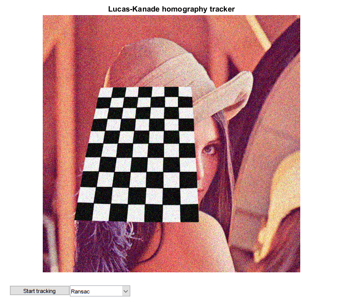
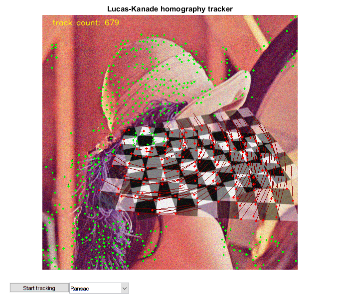

Lucas-Kanade Homography Tracker
Lucas-Kanade sparse optical flow demo. Uses cv.goodFeaturesToTrack for track initialization and back-tracking for match verification between frames. Finds homography between reference and current views.
Sources:
Contents
Options
Parameters for corner detection and flow computation
shi_params = {'MaxCorners',1000, 'QualityLevel',0.01, 'MinDistance',8, ...
'BlockSize',19};
lk_params = {'WinSize',[19 19], 'MaxLevel',2, ...
'Criteria',struct('type','Count+EPS', 'maxCount',10, 'epsilon',0.03)};Video
Prepare video source
if true vid = 0; elseif true vid = fullfile(mexopencv.root(), 'test', '768x576.avi'); elseif mexopencv.require('vision') vid = fullfile(toolboxdir('vision'), 'visiondata', 'visiontraffic.avi'); end cap = createVideoCapture([], 'chess'); assert(cap.isOpened(), 'Failed to initialize capturing');
First frame
Grab first frame
frame0 = cap.read(); assert(~isempty(frame0), 'Failed to read frame'); sz = [size(frame0,2), size(frame0,1)]; % [width,height]
Initialize
% Plot hImg = imshow(frame0); title('Lucas-Kanade homography tracker') % UI widgets to control app state algs = {'0', 'Ransac', 'LMedS', 'Rho'}; hBtn = uicontrol('Style','pushbutton', 'Position',[20 20 120 20], ... 'String','Start tracking', 'Callback',@(o,~) set(o, 'Enable','off')); hCB = uicontrol('Style','popupmenu', 'Position',[140 20 120 20], ... 'String',algs, 'Value',2);
Main loop
p0 = {}; % stores points to track
while ishghandle(hImg)
% Grab next frame
frame = cap.read();
if isempty(frame), break; end
next = cv.cvtColor(frame, 'RGB2GRAY');
out = frame;
if ~isempty(p0)
% track points in forward and backward direction, and check trace
p2 = cv.calcOpticalFlowPyrLK(prev, next, p1, lk_params{:});
p1r = cv.calcOpticalFlowPyrLK(next, prev, p2, lk_params{:});
good = cellfun(@(a,b) max(abs(a - b)), p1, p1r) < 1.0;
% keep good matches
p0 = p0(good);
p1 = p2(good);
prev = next; % next iteration
str = sprintf('track count: %d', numel(p1));
% we need at least 4 pairs of points to estimate homography
if numel(p1) < 4
p0 = {};
continue;
end
% compute perspective transformation, and apply it on reference image
% (homography between ref points and their currently tracked locations)
[H, inliers] = cv.findHomography(p0, p1, ...
'Method',algs{get(hCB, 'Value')}, 'RansacReprojThreshold',10.0);
overlay = cv.warpPerspective(frame0, H, 'DSize',sz);
out = cv.addWeighted(out,0.5, overlay,0.5, 0.0);
% draw points correspondances (inliers/outliers used in estimating H)
inliers = logical(inliers);
out = cv.line(out, p0(inliers), p1(inliers), 'Color',[0 128 0]);
out = cv.line(out, p0(~inliers), p1(~inliers), 'Color',[128 0 0]);
out = cv.circle(out, p1(inliers), 2, 'Thickness','Filled', 'Color',[0 255 0]);
out = cv.circle(out, p1(~inliers), 2, 'Thickness','Filled', 'Color',[255 0 0]);
else
% detect and show corners
p1 = cv.goodFeaturesToTrack(next, shi_params{:});
str = sprintf('feature count: %d', numel(p1));
if ~isempty(p1)
out = cv.circle(out, p1, 2, 'Thickness','Filled', 'Color',[0 0 255]);
end
end
% display points count
out = cv.putText(out, str, [20 20], ...
'FontScale',0.5, 'Color',[255 255 0], 'LineType','AA');
% check if track button was clicked
if strcmp(get(hBtn, 'Enable'), 'off')
% save reference frame, and initialize reference points to track
frame0 = frame;
p0 = cv.goodFeaturesToTrack(next, shi_params{:});
if ~isempty(p0)
% init points and gray image updated each iteration while tracking
p1 = p0;
prev = next;
end
set(hBtn, 'Enable','on');
end
% Display result
set(hImg, 'CData',out);
drawnow;
end
cap.release();